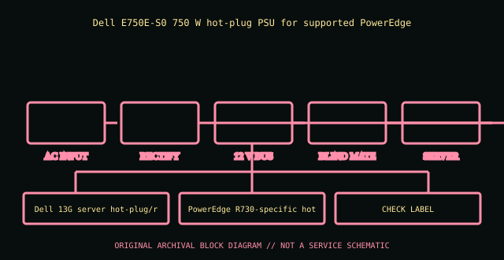

[ POWER CONVERSION // IDENTIFIED MODEL ]
Dell PowerEdge R730 750 W PSU (E750E-S0)
Dell E750E-S0 750 W hot-plug PSU for supported PowerEdge R730 systems. This entry covers the specific model or bounded historical system assembly identified here; suffixes and supplier revisions are not presumed equivalent.

HIGH-VOLTAGE SAFETY: Disconnect mains before external inspection. Never open a PSU. Internal capacitors can retain dangerous charge after disconnection. Do not probe or repair its interior; use qualified service or replace it.
Model-specific ratings & fit
| Manufacturer identity | Dell E750E-S0 750 W hot-plug PSU for supported PowerEdge R730 systems |
|---|---|
| Form factor / generation | Dell 13G server hot-plug/redundant PSU |
| AC input | 100–240 V AC auto-ranging; consult R730 technical guide and module label for current/line limits. |
| DC output | +12 V 62.4 A class, +12 V standby 2.5 A; 750 W maximum; see R730 load/derating table. |
| Dimensions / mounting | PowerEdge R730-specific hot-plug module, blind-mate power distribution interface. |
| Connectors | IEC mains input; proprietary Dell blind-mate server output. No ATX motherboard lead. |
| Revision distinctions | E750E-S0/0G5V61 is the R730 module; do not confuse with R740 H750E/D1100E options. |
Compatibility & safe handling
- Verify full model, suffix, region and revision using the actual unit nameplate and matching manufacturer manual. Wattage and plug shape alone do not establish compatibility.
- Check AC input range, rail and combined output limits, derating, signaling/pinout, cooling direction, mounting and system qualification before installation.
- PSU modular-side cables are model-specific. Never reuse an unapproved lead; a matching plug can carry a different pinout.
- Server hot-plug is permitted only in qualified host configurations and under the host’s documented redundancy/live-service procedure.
- Never open or internally probe the supply. Retire damaged, wet, burnt, corroded, modified or unidentified units.
Revision & archival notes
E750E-S0/0G5V61 is the R730 module; do not confuse with R740 H750E/D1100E options.
Record Dell DP/N, service tag, PSU label and the R730 technical manual. Hot plug only if the supported redundant pair and service instructions permit.
Photograph the full nameplate, model/FRU, supplier, revision/date code, line selector, cable ends, mounting orientation and source-document issue. Keep observed label data separate from test results.
Manufacturer or primary references
- Dell PowerEdge R730 750 W PSU (E750E-S0) — manufacturer/product or primary technical referenceDell E750E-S0 750 W hot-plug PSU for supported PowerEdge R730 systems. Check the exact revision, region and system support information.
- Intel ATX / ATX12V Power Supply Design GuideReference for desktop ATX context only. Proprietary historical and hot-swap server outputs are not made interchangeable by ATX standards.
The specific PSU nameplate and corresponding model/service documentation remain controlling.